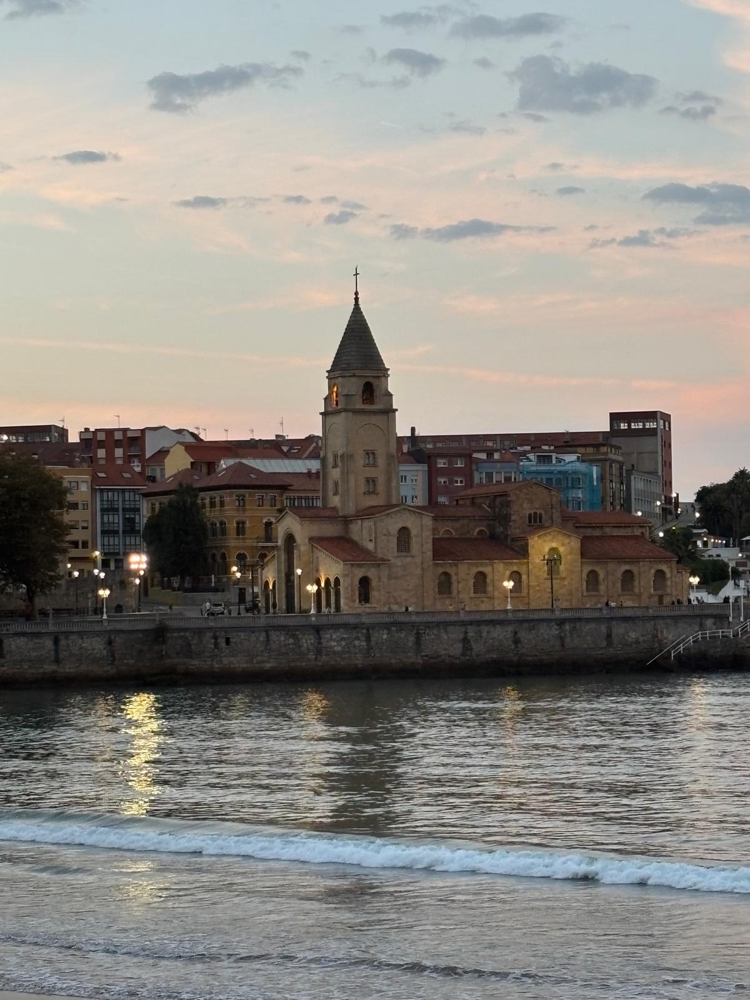
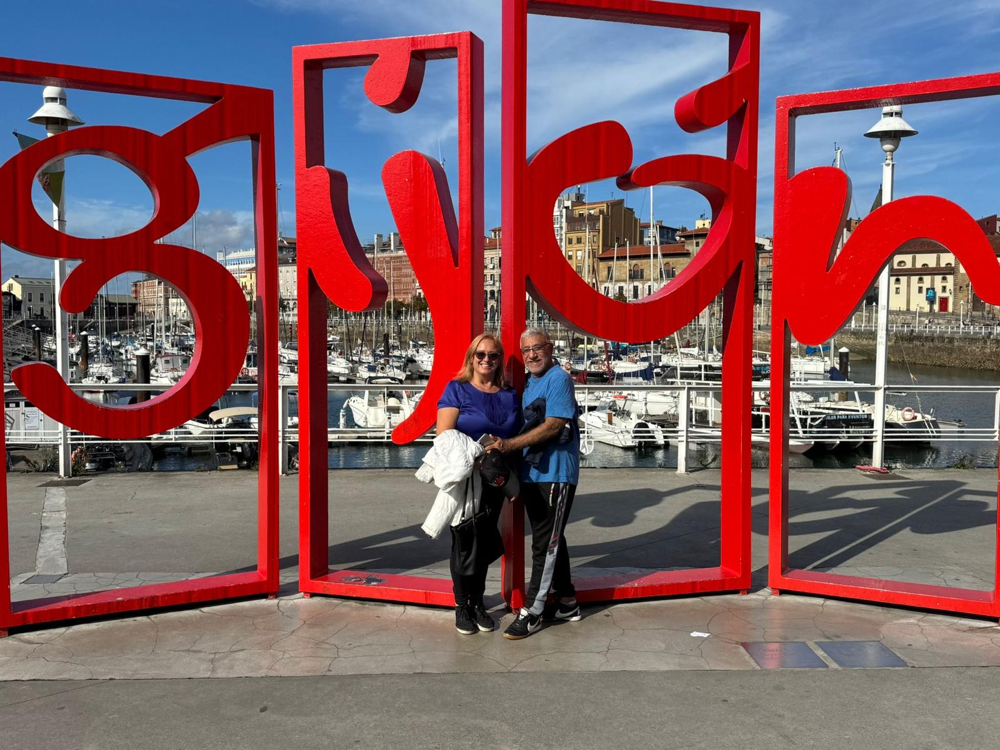
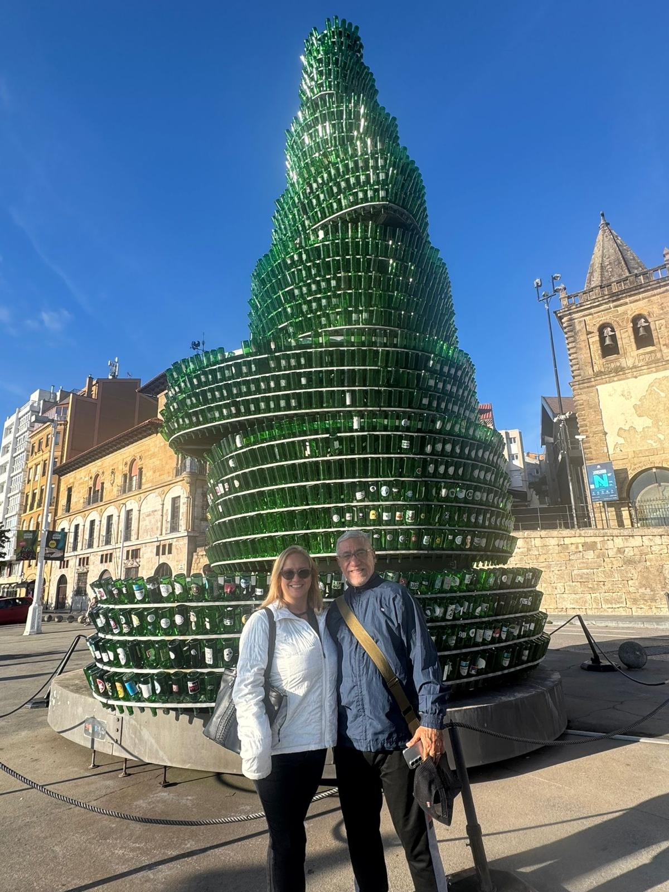
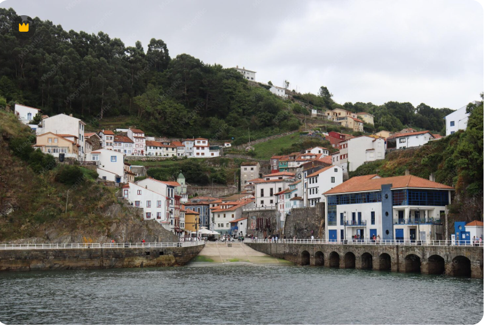
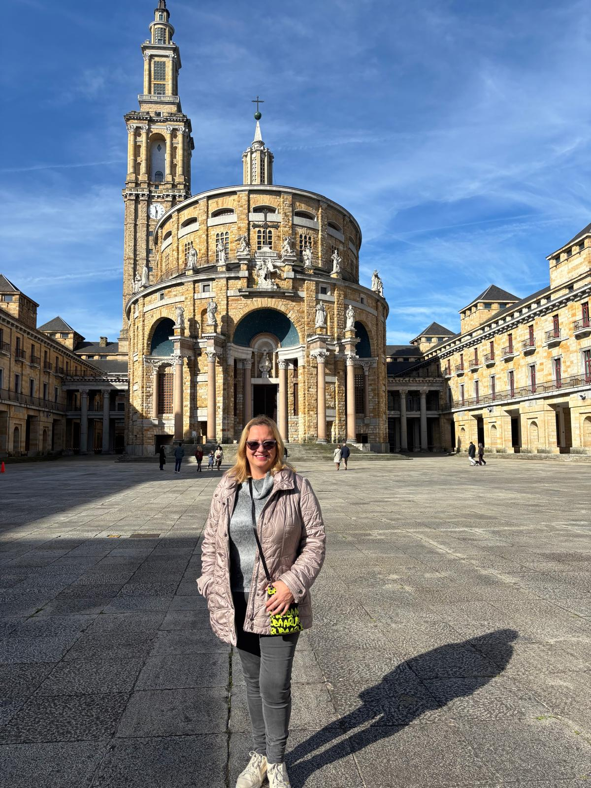
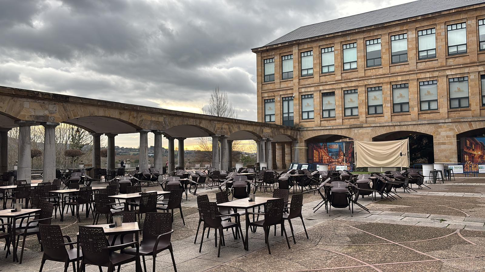
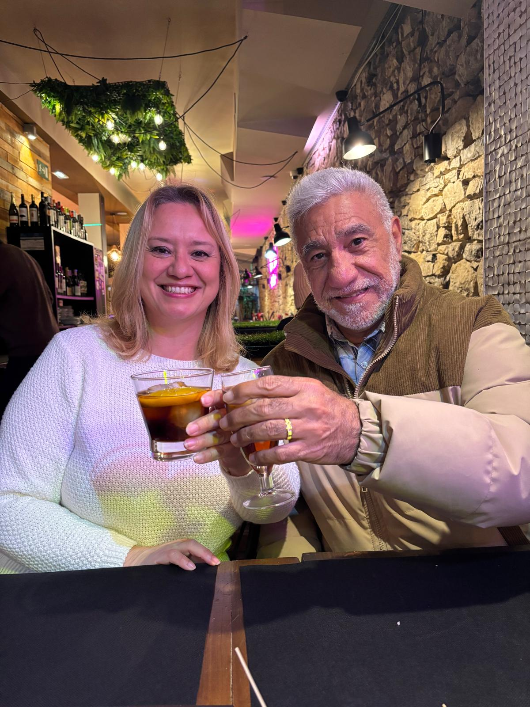

A plan thoughtfully prepared for us to enjoy together
"Hola Kate y Dave,"
We’re so excited that the countdown to our reunion is almost over 💙
We’ve put together this little itinerary with lots of care so we can enjoy your visit to Gijón together, combining relaxing walks, special places, and of course, great food.
It’s just a flexible plan — if you feel like changing anything, adding new ideas, or simply going with the flow, that’s absolutely perfect!
What matters most is spending time together and creating beautiful memories.
*Note: Since all sites are close by, we'll just walk around and decide as we go if you want to explore more or just enjoy the views!
Late Afternoon: Siesta Time!
A little time to recharge and be ready for the night.
🍽️ Special dinner
Restaurante El Chigre 2.0 – Plaza Mayor
🕗 08:00 PM (Restaurant opens at this time)



🍽️ Lunch
Restaurant Isabel Plaza de la Marina/Calle Ribera, 3:00 PM
Note: The kitchen closes at 4:00 PM, so we should be there by 3:00 PM.
Afternoon
🍽️ Lunch & traditional vermouth time (2:00–4:00 PM)
Restaurante PatiOh!



Lunes 18 Mayo
Relaxing time at the Marina / Port area
Restaurant / Pizzeria: La B del M 📍 Playa poniente Gijón 🕑 1:00 PM